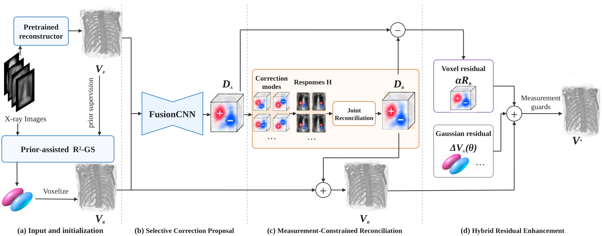
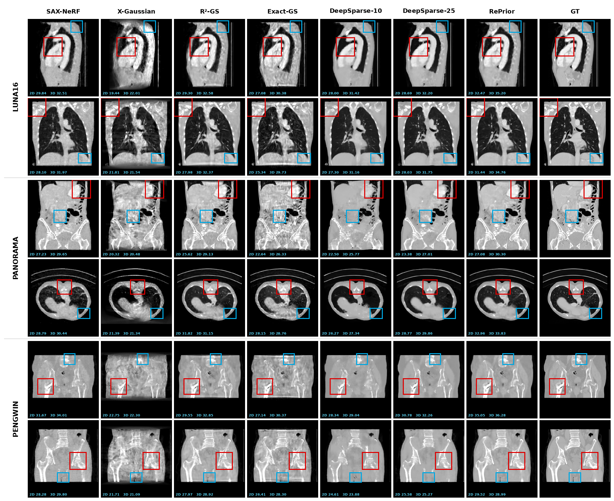

Sparse-view cone-beam computed tomography (CBCT) is severely under-constrained by limited X-ray projections. Learned reconstruction can provide complementary anatomical information, but using it as a prior in patient-specific Gaussian reconstruction introduces two challenges. First, the discrepancy between the learned prior and current reconstruction is spatially non-uniform: some local differences contain useful missing 3D information, whereas others reflect prior bias. Second, even a volumetrically beneficial correction can conflict with the observed X-ray measurements. Since X-ray measurements are line integrals, spatially separated corrections may affect overlapping rays, with their signed projection responses reinforcing or partially canceling in the measurement residual, so their feasibility cannot always be assessed independently.
In this paper, we introduce RePrior, a multi-stage progressive prior-correction framework that addresses correction actionability, measurement feasibility, and representation expressivity. Selective Correction Proposal (SCP) first identifies actionable signed local corrections from prior–reconstruction discrepancies. Measurement-Constrained Reconciliation (MCR) then jointly enforces their consistency with patient-specific X-ray measurements, while Hybrid Residual Enhancement (HRE) recovers additional correction capacity through complementary voxel- and Gaussian-domain degrees of freedom around the reconciled anchor. RePrior requires neither test-time ground truth nor case-specific network fine-tuning. RePrior gains approximately 2.6 dB in 3D PSNR over R²-Gaussian across LUNA16, PANORAMA, and PENGWIN. Beyond prior-assisted reconstruction, it delivers additional gains in volumetric quality and observed-view projection fidelity, with consistent gains in held-out-view fidelity in the backbone-matched evaluation.


3D reconstruction PSNR (dB) — 25-view setting
| Method | LUNA16 (90) | PANORAMA (90) | PENGWIN (50) |
|---|---|---|---|
| R²-GS | 29.12 | 28.42 | 30.29 |
| DeepSparse-25 | 30.85 | 28.87 | 29.33 |
| RePrior (Ours) | 32.58 | 30.80 | 32.33 |
RePrior improves volumetric PSNR over R²-GS by 3.46 dB, 2.38 dB, and 2.04 dB on LUNA16, PANORAMA, and PENGWIN, respectively. The main paper and its appendix provide the complete baseline comparison, ablations, and held-out-view evaluation.
@misc{yin2026reprior,
title = {RePrior: Measurement-Reconciled Prior Correction for Sparse-View CBCT Reconstruction},
author = {Yin, Mengrui and Ding, Tianxingjian and Zhao, Wufan and Yan, Ziyang and Tian, Yu},
year = {2026},
note = {Manuscript under review at ICLR 2027}
}Pre-publication citation. Publication details will be updated after a final decision.